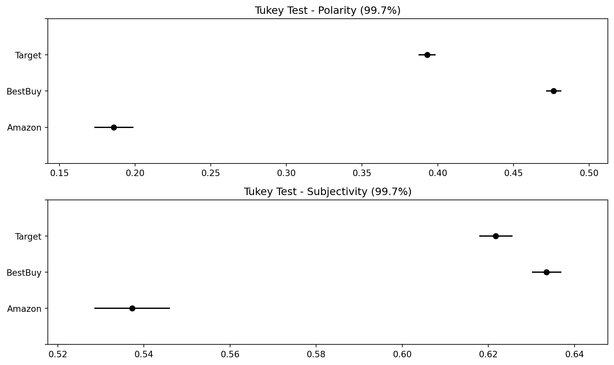

| Variable | Data Type |
|---|---|
| Product Title | string |
| Product Category* | string |
| Product Details/Specs | string |
| Product Cost | float |
2 Data Collection and Exploration
2.1 Data Collection Overview
Leverage python Selenium, urllib, and Beautiful Soup to scrape data from X products.
Sought to collect some data from 3 websites - target, amazon, and best buy.
Where possible, collect same entity from multiple sites
As part of collection, to the greatest extent we are able, we cleaned information during the scraping process. We leveraged tools such as the python regular expression library and (anything else?) to pull the exact information we sought while scraping. The only possible additional cleaning that may be required after scraping is the handling of unicode characters within product names, product reviews, and so forth.
In terms of simplicity for scraping our data, we will manually identify a list of products. Guha Majumder, Dutta Gupta, and Paul (2022) leveraged solely 3 products from Amazon. Our team seeks to scrape between 20 and 30 products and all their reviews from Target, Amazon, and Best Buy. By doing so, we are greatly increasing the sample size of data compared to the original work performed.
2.2 Data Collection Details
In collecting our data, in order to adhere to the model implemented by Guha Majumder, Dutta Gupta, and Paul (2022), we require the following data points, at a minimum:
| Variable | Data Type |
|---|---|
| Verified Purchase | boolean |
| Star Rating | float |
| Review Content | string |
| Useful Votes | integer |
From our collected data, here are some of the calculations we’ll need to run for building our models. If time is available, we will run these calculations using Python’s NLTK before the completion of this milestone.
| Variable | Data Type |
|---|---|
| Product Subjectivity | float |
| Review Length | integer |
| Sentiment Score | float |
| Reputation Score | float |
| Product Type Score | float |
| Polarity Score | float |
In terms of structuring our stored data, we will have a central table and child tables. Since we will seek, in some cases, to gather the same product from multiple websites, we must have a structure that identifies:
The full listing of products, assigned an arbitrary ID
A listing of specific products we intend to scrape from each of the websites we’ve identified. Adding an additional ID of [company_name]-[arbitrary_product_id]
Site-specific product information
Site-specific review content and metadata
To wrangle the potential amount of data we may collect, we will partition review files into their own files under the following convention: [company_name]-[arbitrary_product_id]-review_content.csv. Using this method will allow us to capture thousands of reviews for multiple products without overrunning GitHub filesize limitations. Following this convention will also allow us to easily script out the integration of all these files for analysis when we begin building and applying our models.
Additionally, the use of assigning products an arbitrary ID that is common between different vendors will allow us to directly compare review and product information across multiple vendors simultaneously to gather additional insights. Effectively, if we group products by this identifier, we can see how the product performs overall in multiple e-commerce platforms. Similarly, we can use this information to evaluate and run comparisons and tests on individual products, given the treatment of their offering on different platforms. This can help generate even more insight before model application.
For instance, we may be able to explore questions like:
Is the price of a product higher, given it’s offered on Amazon, BestBuy, or Target?
Is a product’s star rating affected by which e-commerce platform is selling it?
Is there a substantial difference in number of product reviews on one e-commerce platform vs. another?
Is one e-commerce platform more likely to have input and feedback on reviews (i.e. higher proportion of “this review is helpful” votes to total number of reviews)?
What is the difference in the level of detail provided in product descriptions (e.g. for the same product) across each e-commerce platform?
Do certain product categories perform better on specific platforms?
Are users more likely to leave reviews on one platform over another?
Do customers show different purchasing behaviors based on promotional strategies employed by platforms?
Structuring our data properly during the collection process will enable us to explore and answer these questions.
2.3 Collection Procedures?
We wrote code to allow us to (mostly) template out our gathering of information from each website. The general process for each page is similar for data gathering. To alleviate any unnecessary burden on the target websites, we manually identified URLs to the specific products we sought out to gather, and wrote our code to iterate through those URLs and pull the necessary data and features we sought. This hybrid approach saved us time and effort.
Gathering from Target (All products)
- Target has dynamic content on their webpages. We used Python Selenium to navigate to product pages and automate the selection of items needed to expand sections to reveal additional data. We also automated the process of expanding out all reviews so as to iterate through and parse the content of every review for each product in question. We extracted the fields listed above (reference here) to store in our records tables.
Gathering from Amazon (All Products)
- Product & Review data was scraped from Amazon’s website using Python and Selenium. A Selenium WebDriver was utilized to automate web browser interactions. After navigating to product categories like electronics, home appliances, furniture, books, and grocery, Selenium’s functions were employed to locate review elements. These elements were then parsed and collected, storing the data in a structured format i.e. a CSV file. Pagination handling was implemented to scrape reviews from multiple pages.
Gathering from BestBuy (Electronic Products, Furniture Item(s)? - no grocery or clothing)
- Just like Target and Amazon, even BestBuy has dynamic content on its web page. We employed Python with Selenium to automate the exploration of product pages, unveiling hidden content, and harvesting essential data. Employing Selenium’s functionalities, we initiated the traversal process, enabling the program to automatically expand pertinent sections to uncover additional information. By targeting elements such as product details and reviews, we orchestrated the seamless extraction of critical fields from each product’s page. This automated approach allowed us to efficiently parse through an extensive array of reviews, ensuring a comprehensive analysis of user feedback for the products under scrutiny. We systematically stored the extracted data in our records tables for further analysis and reference.
2.4 Visualizations
We require a minimum of 10 unique EDA plots for this milestone. We’ve outlined some of the below but need our data in order and unified prior to development.
- Scatter Plots

Generally, in Figure 2.1 and Figure 2.2, we see a trend for the median polarity and subjectivity of each review to increase as the star rating increases. We also see that, generally, the data suggest that we have a minimum of neutral polarity that tends towards positive as star rating increases.
Bar Plots
- Box Plots

* Violin Plots (e.g. same product, two different websites)
* review length
* vs star rating
* vs sentiment
* Product description / detail length
* Potentially explore "specificity" classifier
* Correlation analyses and linear regressions
* Heatmaps
* Tukey test

The Tukey honest significance tests, depicted in Figure 2.6 suggest some interesting patterns between the three websites. Namely, target and best buy seem to have (across the board) higher star ratings, polarity, and subjectivity than the same variables for Amazon! Additionally, for each variable and each website, it seems there is no overlap in the variables at the 95% confidence level. The only exception here is for subjectivity between Target and BestBuy.
2.4.1 Exploring Sentiments - Star Rating vs. Sentiment Variables
Inter-Website Comparison of Product Reviews
Same Product
Clustering?
Distances?
All Products
Inspect the following, visually:
Product Ratings
Customer Sentiments try to score before plotting & turn-in
Review Polarity try to score and store before plotting
Naive Bayes Classifier
Reliability estimates
Product description subjectivity scores try to score and store before turn-in
Average / Spread of number of ratings per product, try to score and store before turn-in
Average/Spread of Useful Votes per Product Review, try to score and store before turn-in
Inspection of Data and / or Scoring using Kansei method.
Will need to take note on if / how these variables conform to some form of statistical distribution (uniform, normal, exponential, etc)
2.5 Data Before / After
Much of our data cleaning occured during the collection process. Our team took specific steps to pursue cleaning during collection to simplify the process of bringing all information together:
Using regular expressions to extract key values from text blocks
Leveraging XPATH, class names, and element IDs to identify HTML fields in which our desired data points resided
Post-scraping, we had to pursue some additional cleanup
Removal of unicode characters from review content where possible through coding and scripting.
Conversion of numbers, stored as strings, to integers (i.e. star ratings, cost/dollar amounts)
Handling of missing values (i.e. no ratings, no star ratings, no cost listed)
A particular challenge we came across during the data cleaning process was the handling foreign language reviews, highly repetitive reviews, and misspelled reviews. To better support our calculated measures for subjectivity and polarity, we leveraged the langdetect library to attempt to classify the languages of each of our 45,000+ reviews collected.
| site | reviewer_name | review_content | |
|---|---|---|---|
| 495 | Amazon | Kitiüå∏ | Muy oratuca y fácil de instalar |
| 525 | Amazon | julia | Impossible to set up so far |
| 552 | Amazon | Liuska Noda | Me está dando problemas para conectarla me dic... |
| 689 | Amazon | Arturo | Me compre la impresora para imprimir en la may... |
| 721 | Amazon | Hbolivar | funciono para 4 hojas .. problemas con wi-fi -... |
| 872 | Amazon | Suena muy bien me encant√≥ ‚ù§Ô∏èü•∞ | Muy buena elecci√≥n me encant√≥ ü•∞ suena bien |
| 895 | Amazon | Clara James | Love it! |
| 901 | Amazon | humberto a. | Excelente aparato para tan bajo precio, sonido... |
| 904 | Amazon | Betty Maronsky | El Bluetooth muy bueno escucho mi música |
| 906 | Amazon | Melissa Cannon | I love it |
In some cases, the language classification by langdetect was a false negative (i.e. classified as a language other than english, when it was indeed English). In our data exploration, we found that many of these false positives were outliers in other categories (whether for review length, review subjectivity, review polarity, or star rating). As such, we find it prudent to exclude these reviews from our dataset when pursuing model development.
In total, langdetect classified fewer than X reviews (accounting for X.XX% of our collected reviews) as being non-English. Excluding these reviews should have minimal impact on the pursuit of model development.
2.6 Insights from Collection and EDA
Statistically significant differences for review star rating, subjectivity, polarity across each of the three websites.
Exclusion of outliers for one or more categories could result in excluding lower star rating reviews, which could impact model